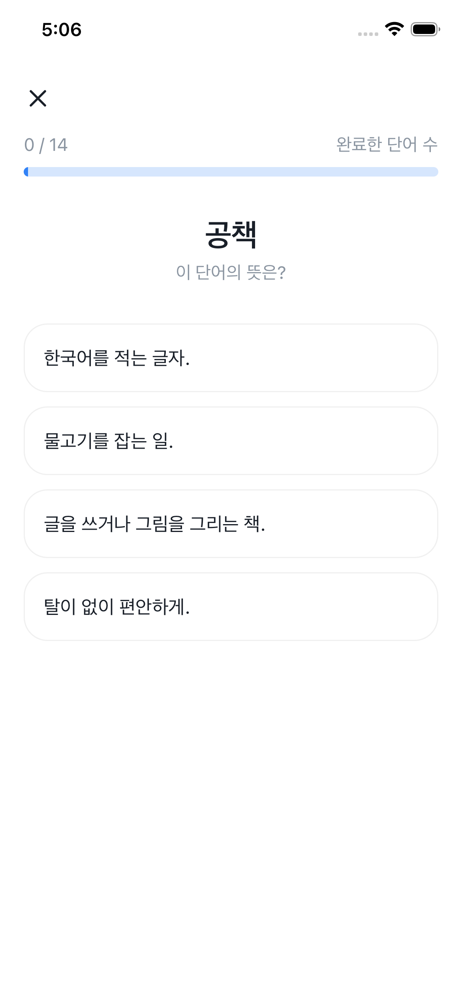
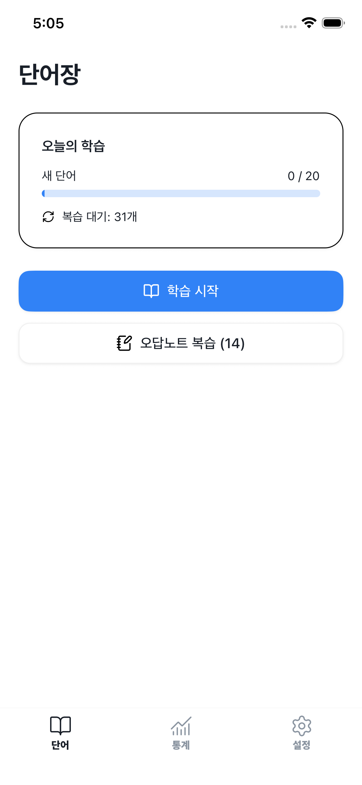
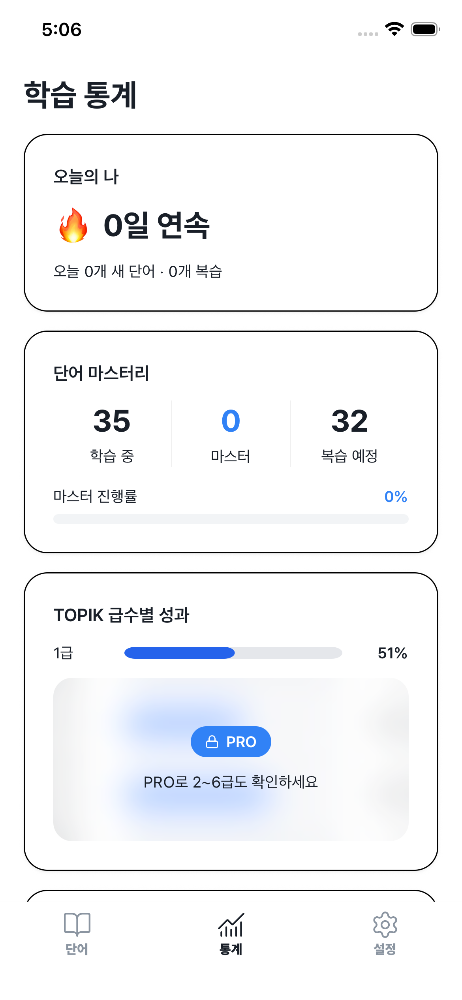
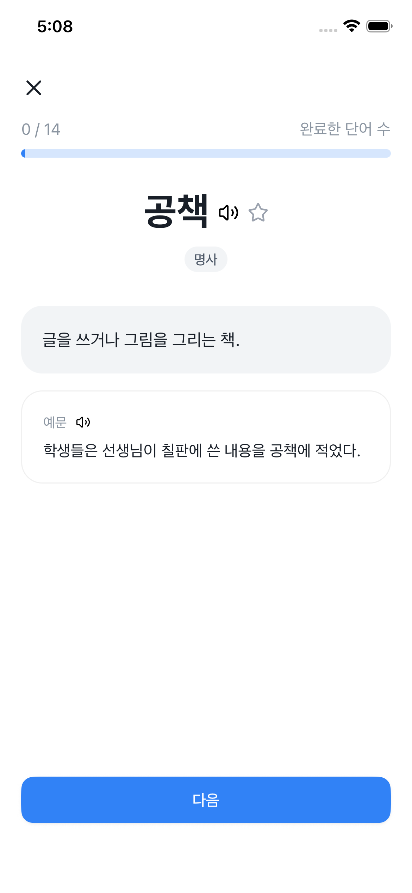

고통: 시험장 단어 70%가 낯설다
실제 TOPIK 기출 7,970문제 · 4가지 퀴즈 유형
모든 단어는 실제 TOPIK 기출 데이터에서 가져왔고, 급수별로 정리돼 있습니다. 단어 인지, 의미 재현, 빈칸 채우기, 문장 독해 4가지 유형이 학습 진도에 따라 자동 에스컬레이션됩니다.

TOPIK 3급 이상을 노리는 외국인 학습자를 위한 앱. 실제 TOPIK 기출 단어를 SRS(간격 반복) 스케줄로 꺼내줍니다. 모든 단어와 뜻풀이는 한국인 원어민이 직접 검수해 TOPIK 응시에 최적화돼 있습니다.
하루 새 단어 20개 무료 — 평생. 회원가입 없이 바로 학습.

유학·취업·비자 목적으로 3~6개월 안에 TOPIK 3급 이상을 따야 하는 외국인 성인 학습자. 학원에 다닐 여유는 없고, 하루 중 쓸 수 있는 시간은 출퇴근 30~60분뿐인 사람을 위한 앱입니다.
매일 아침 지하철에서 한국어 앱을 켠다. 시험 2주 전에야 실제 기출 시험지를 펼쳤는데, 단어의 70%가 처음 본다. 써봤던 단어장 앱들은 대부분 외국인 제작진이 만들어 오기입과 어색한 번역이 많았고, 한국어 학원은 비싸고 시간표도 맞지 않는다. 남은 것은 낭비한 시간과 불안.
모든 단어는 실제 TOPIK 기출 데이터에서 가져왔고, 급수별로 정리돼 있습니다. 단어 인지, 의미 재현, 빈칸 채우기, 문장 독해 4가지 유형이 학습 진도에 따라 자동 에스컬레이션됩니다.

맞힌 단어는 최대 120일까지 간격이 벌어지고, 틀린 단어는 내일 다시 등장합니다. 당신의 20분은 "이미 아는 단어 반복"이 아니라 "시험 점수를 올리는 단어"에 집중됩니다.

모든 단어, 뜻풀이, 예문은 한국인 원어민이 직접 검수했고, 국립국어원 krdict 공식 데이터를 기반으로 합니다. 외국인 제작진이 만든 앱에서 자주 나오는 오기입·오답·어색한 번역이 없습니다. 이것이 TOPIK Note의 핵심 차별점입니다.

"SRS 스케줄이 실제 시험 일정과 처음으로 맞아떨어진 앱이에요. 아는 단어를 다시 풀 일이 없어지니까 6주 만에 모의 점수가 두 구간 올랐습니다."
회원가입 벽 없음. 설치 → 레벨 선택 → 90초 안에 첫 TOPIK 단어 퀴즈.